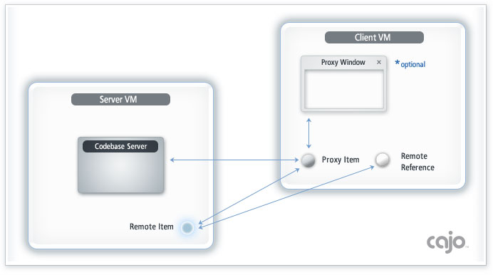

|
|
 |
|
Proxy items distribute cajo functionality
|
|
 |
|
In this framework; technically a proxy is any object, sent from one
VM to another, typically as a method argument, or result. (though they can
also be sent in exceptions) In this page, we will look at proxies that
usually derive from
BaseProxy. These proxies are sent to a client by, and on behalf of, a
server item. A BaseProxy subclass will arrive with a remote link back to its
server item, on which it can asynchronously communicate with it. Proxies are
often used to pre-process method invocations made by the client, using the
computing resources of the client, rather than those of the server.
|
|
|
|
|
A proxy can optionally provide a graphical user interface, if it is
intended to be more than just a machine-to-machine interface.
Architecturally a BaseProxy is very similar to a
BaseItem. It has an optional
MainThread,
which is cannonically launched by the client, on its arrival. It has a
final implementation of the Invoke
interface, used to route local and remote invocations to its public methods,
returning the results, if any. It also has string tables, which can be
automatically loaded with the language appropriate to the locale of the
client, when defined.
Each proxy is served by, and services a specific server item. A server item
binds itself and serves its proxy object using the static
bind method of the ItemServer
class. The server item can also announce its availablity to a collection of
listening VMs via the multicast mechanism,
described in the next section. It is generally necessary to start up a
CodebaseServer, on which
the client will automatically request, and receive the proxy class files.
When a VM serves proxies, it will require two TCP ports; one for
communication with the server item itself, and another for sending the proxy
codebase via the CodebaseServer. If a server does not use proxies, it only
needs one port. The CodebaseServer can also be used to send complex objects
to an client, who would in turn require the necessary class definitions.
|
|
|
|
A proxy is typically obtained from a remote item reference by using its null
argument getProxy
method. The returned item will be its default proxy, if it supports one. Once
a proxy item is received, the otrhodox initialization procedure is to:
proxy.invoke("init", new Remote(proxy));
This will cause the proxy to load its string table, create its main thread,
and begin operating. It can use the provided remote reference to itself,
to pass back to its server item, or to other remote items, on which they
may asynchronously communicate with it. The return of this invocation, if
non-null, will be the proxy's default graphical user interface. The client
can display this if it wishes. The framework specifies only the method to
obtain the default proxy. If an item serves multiple proxies, the method or
methods to obtain them are application specific. A suggestion would
be to use a string argument in a getProxy invocation, to specify the desired
proxy. Note: as a general rule, it is considered elegant practice for
an item to support both a proxy interface to itself, and for that proxy to
support a graphical interface. Minimally, an item should at least support a
String getDescription() method to describe its use and features.
Note: you can save proxies to disc for later use, possibly in a
diffent VM session. However, you will need to reinitialize the proxy, each
time it is deserialized. The most common storage format used within the
framework is called a zedmob.
|
|
|
|
|
If a remote machine is willing to host proxies, another item can typically
install a proxy, by invoking a remote item's
setProxy
method, passing its proxy, as the argument. The default implementation will
invoke the proxy's init method, passing a reference to the proxy, remoted
within the context of the BaseItem's VM, to start its operation. It will then
return the same reference back to the calling VM, on which it may
asynchronously communicate with its proxy. Receiving too many proxies could
overload a client VM, therefore acceptance of proxies is disabled by default.
It can be enabled by invoking the
acceptProxies
method of the ItemServer class. Attempting to send a proxy to an VM that
does not accept them will result in a ClassNotFoundException being
automatically thrown to the sender. BaseItem's setProxy method is often
extended, to provide additional application specific resources to the
arriving proxy. Proxies offer an exciting dynamic method for what is
popularly called grid computing these days.
|
|
|
|
The diagram below illustrates the four step process to using proxies:
- Client receives remote item reference
- Client requests proxy from remote item
- Client receives proxy codebase
- Client initializes proxy (receiving optional GUI)

An excellent "bare-bones" example, of just how easy it is to use
proxies, can be found in the project examples wiki;
here.
One of the most important features of a proxy is to mitigate network latency.
This can be of critical importance, if the remote item is very far away, or
linked over a slow network. Generally it is a recommended practice for remote
items to provide a proxy. At a minimum, it would serve to reduce network
traffic, and possibly pre-fetch needed objects contextually. Effectively
this type of proxy would be considered a 'smart' remote reference.
Clients would then have the option to use the proxy, or to manipulate the
remote object directly, over the network.
Another major benefit to this proxy hosting architecture, is that it allows
multiple remote servers to provide their graphical user interfaces to operate
within a single client JVM. This provides both a tremendous reduction
in compute requirements, and memory consumption, as well as significant
performance improvement vs. hosting each server's proxy in a separate
virtual machine. Similarly, this architecture also allows a single
server VM to host multiple items, to realise the very same benefits.
Both the proxy, and its serving item, can in turn give their remote
references to other items. As a result, an item calling another item does
not know, or need even care, if it is invoking a local item, a remote item,
a local proxy, or a remote proxy. Ideally, every remote object should support
an optional proxy interface, to optimize performance, preferably supporting
a graphical interface to the item as well.
The next section multicast will show how items
can send or receive, remote item references, using a method analogous to a
radio broadcast!
|
|
Proxies are just items, sent by the server, to run at the client, on the server's behalf.
|
|